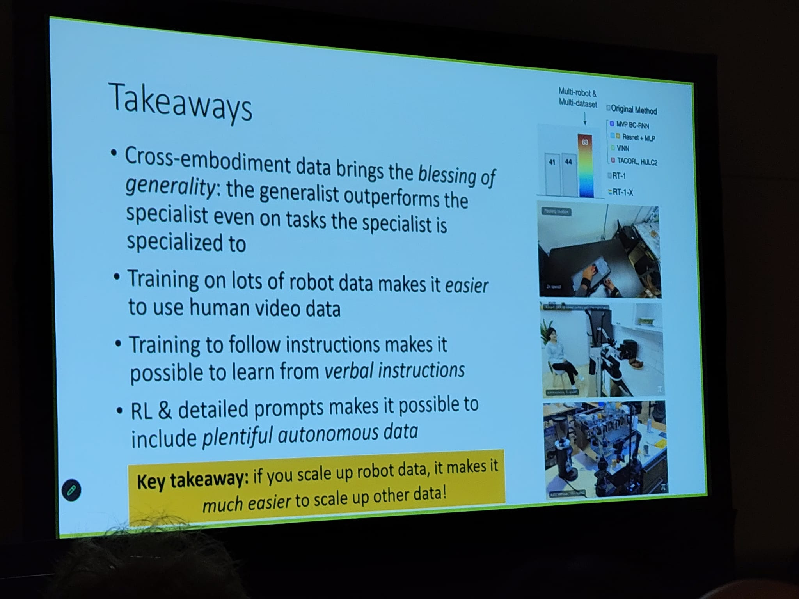
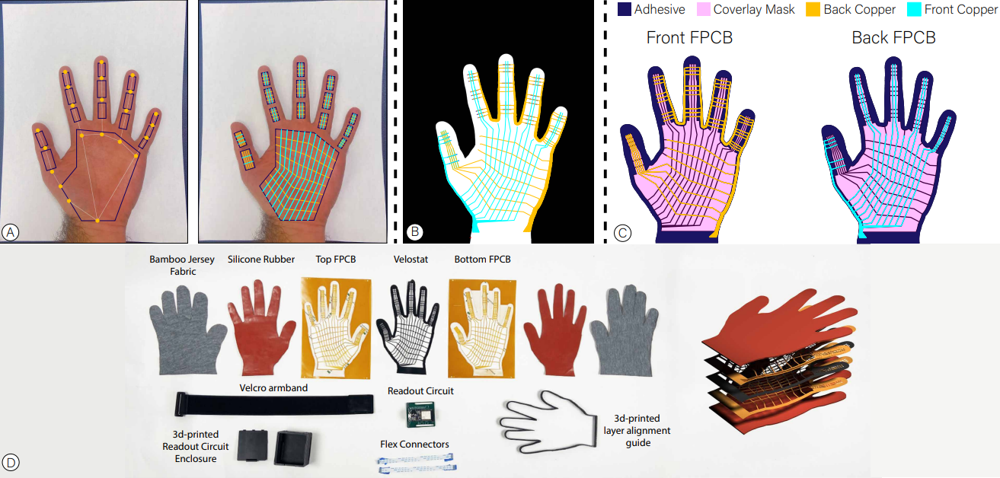
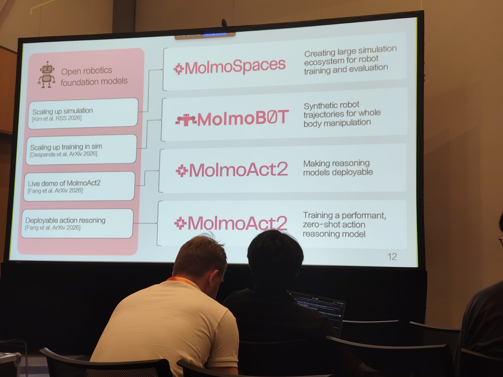
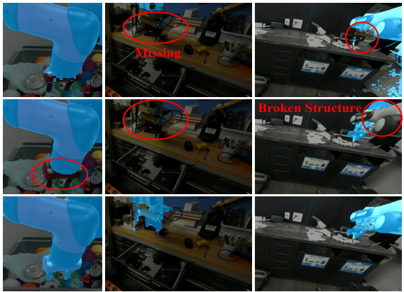
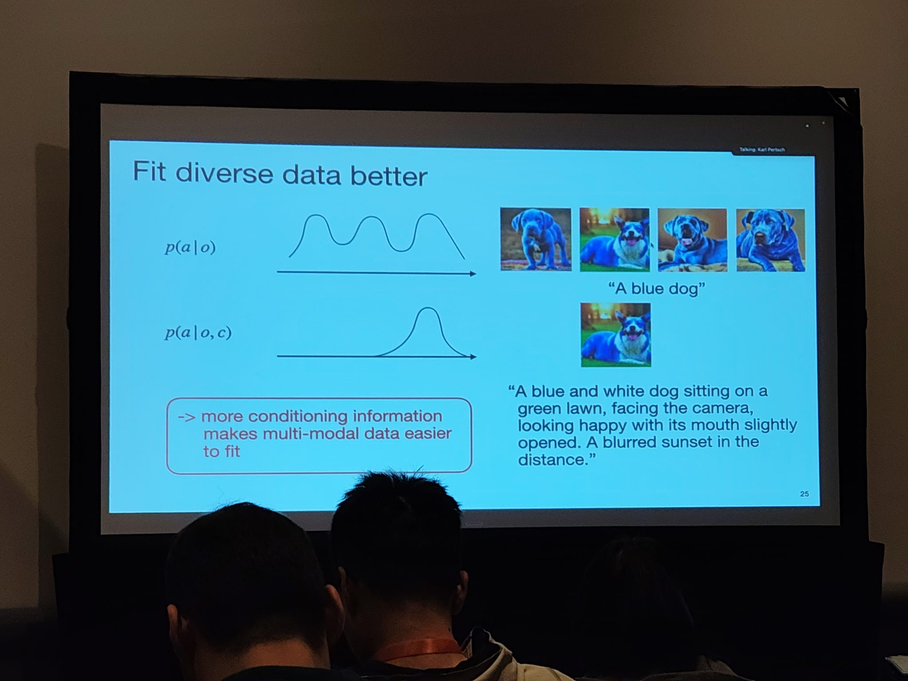
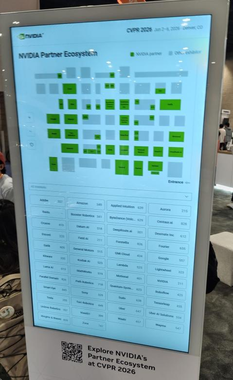
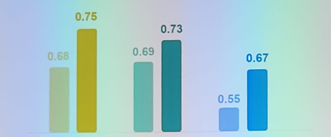

|
The goal of this blog is to cover the trends in robotics and industry from CVPR 2026. I believe this text is also accessible for people outside of the robotics domain - appropriate links with details are provided.
Points are mostly independent so feel free to read whatever is of interest to you.
-
Is the scaling of robotics data going to repeat the success of the LLM data scaling?
- Sergey Levine’s talk covered (already public) details about Physical Intelligence’s latest VLA models, notably the opportunity to transfer knowledge between RL specialist policies and generalist policies. In one direction you can have RL specialist policies generating a lot of rollouts, tagged with their execution quality scores, which can be used to train the generalist policy. In the other direction you add “RL tokens” to be generated by the generalist policy to play the role of compressed states from which to train the specialist models better.

- The development of generalist robot policies is seeing a shift towards utilizing stronger backbones such as video generation models, hoping that predicting the future as an objective is the best prior for action generation.
- Yilun Du discussed the limitations of language for robot control, the ability to reason in videos (through video generation) and the benefits of having a good video generation backbone for downstream applications. Additionally the idea of mapping the joints backwards (visually) in case of very high-quality video generation was mentioned.
-
Dexterous manipulation
- Five-finger human-like hands as the target end-effector are gaining popularity.
- For the robot hands themselves, multiple people said that changing the hardware has been crucial to solve recurring problems like inaccuracies in execution. Notably, I heard positive reviews from multiple people about the Sharpa hands. We’ll verify this soon as INSAIT is also getting a pair of them.
- There is interest in utilizing ego-centric human data for training policies. Whether you need to explicitly annotate the hand pose is still an open question.
- Few early works on robotics fingertips for manipulation of tiny objects like bolts and screws.
- Tactile seems to be the next step in detailed annotation. How to represent and feed tactile data to models is not settled - some works pass the vector field as an image, others try to encode it to a latent representation/token space. Mixed opinions on whether you actually need this data or it can be guessed through visual information about the object.
- Nima Fazeli talked about representing the tactile observations as additional tokens. Mentioned that there are difficulties in sim2real for manipulation when simulating tactile. “The software which we can simulate will lead to hardware following it for the actual robots.”
- A good (in terms of usefulness and availability) data collection glove is yet to be created, with the most interesting result I saw being Fits like a Flex-Glove claiming accessible production of tactile sensing gloves under $130 per glove.

- Ranjay Krishna continues to deliver some of the best presentations - this time talking about MolmoSpaces, MolmoBOT, and MolmoAct2. MolmoSpaces is an ambitious project for training data generation at scale that contains 230k indoor environments, 130k richly annotated object assets compatible with MuJoCo, Isaac, and ManiSkill. MolmoBOT challenges the assumption that you need real-world data by training a policy solely on simulation data created through the MolmoSpaces environments. MolmoAct2 takes on the challenge to reinvent the whole pipeline - from the VLM (Molmo2-ER, specialized for spatial and embodied reasoning), through creation/curation of multiple datasets, a MolmoAct2-FAST tokenizer, architectural innovations, and pre/post-training recipes. (MolmoAct2)

- There were works on distilling/making small VLA models (SwiftVLA, Evo-1) throughout the conference. I personally don’t think it’s the time for that yet, given that the bottleneck is the actual ability/accuracy rather than size.
- An interesting line of work was to execute actions very fast through architectural changes in action chunking (DynamicVLA) in order to enable the policy to work with moving objects - for example catching a moving ball on a table before it rolls off of it.
- Throughout the whole conference there was a lot of work about thinking outside of language space (mostly visual thinking). For robotics MolmoAct2 has moved to doing adaptive depth reasoning (adaptive means predicting tokens only for regions that change between timestamps) On the other hand ACoT-VLA does thinking in the action space itself. It is yet to be seen whether human-tailored thinking objectives such as depth estimation and trajectory planning will continue to perform better.
- My favourite Oral presentation was RobotSeg. It’s about better segmentation of robot embodiments in videos. From my own experience, popular segmentation models like SAM3 struggle with robots - they sometimes miss segmenting the gripper, ignore parts of the robot (or its wires), and have a lot of “flickering” in the segmentations.

- Karl Pertsch (PI) had a very interesting talk about steerability. For the data itself it’s important to balance how easy it is to label, how strong the steering signal is, and how difficult it is to be predicted by a policy. To quantify the steering signal you can look into the mutual information between the actions and the new steering input given the observations. Another main point was that more conditioning information makes multi-modal data easier to fit as the distribution can simplify under the new conditioning. For example if you can estimate a quality metric for your data you can utilize it when feeding it to the model to improve performance. (Steerable Vision-Language-Action Policies
for Embodied Reasoning and Hierarchical Control contains the main ideas and results of applying them)

- SPEAR-1 (disclaimer, our paper) showed how to improve 3D understanding through scaling of non-robotics data. We enrich it by automatic annotations and use it to improve the VLM’s performance through 3D-VQA which also translates to better downstream performance especially in tasks which require spatial understanding.

Other:
- I missed the Workshop on “Bitter Lessons” but heard overwhelmingly positive feedback about it. If it is available at a conference you would be attending I would seriously recommend it.
- Best paper award went to D4RT which infers full camera parameters, depth, point clouds, and spatiotemporal correspondence from videos.
Industry:
- A lot of companies that are doing all sorts of data providing, mainly robotics but not only. While talking with some of the representatives, even they admit that the space for data providing is becoming saturated while there are not too many foundational models companies to sell data to. A significant amount of the companies create “exclusive” datasets - for a particular company, without the ability to resell them. I have been left with the impression that the companies can provide a lot of elaborate/detailed/diverse annotations but they don’t have a sense which of these are actually useful when scaling robot data.
- A surprising amount of autonomous driving companies with focus on truck automation, the “smaller” players still believe they have a chance or they want to sell their data to the big players.
- A number of companies were providing hardware with emphasis on hands.
- There was a Chinese company which didn’t even bother writing what they do in English. I get the point, but was it really necessary?
- Maybe the most important takeaway from the companies is that Nvidia is “partner” with ~half of them.

I’d like to end this blog with an actual image from an oral presentation. Please don’t make graphs like this.

Note: works included in the text have been mentioned throughout the conference - this does not necessarily mean they were published at this specific conference.
|
{kind=link}
{kind=link}
{kind=link}
{kind=link}
{kind=link}
{kind=link}
{kind=link}